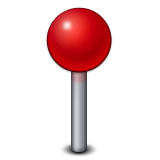
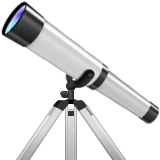

I'm a designer / urbanist / storyteller*
*I design spaces. I design things. I tell stories. I create experiences.
Currently based in Toronto, Canada, I am an interdisciplinary designer for the Creative Studio at FORREC Ltd, creating experiences that ignite play , curiosity  , and happiness .
I strive for thoughtful, meaningful design in a digital age.
Trained in both architectural and digital media design, I work towards the creation of narrative-driven, interactive design in the museum and entertainment sector. I am an alumnus of the Digital Media Zone -- Canada's top university business and technology incubator.
Outside of FORREC, I have a passion for youth-engagement and education centered on design thinking. I am the co-founder of Studio BUD, a youth-driven creative initiative for collaborative participatory design sprints, as a result of my work in the 2015 cohort of Ryerson University's Master of Digital Media program.
- 2014 - 2015 Master of Digital Media (MDM), Ryerson University
- 2009 - 2013 Bachelor of Architectural Science (BArchSc), Ryerson University
- 2015 - present Designer, FORREC Ltd.
- 2015 - present Co-Founder, Studio BUD
- 2015 - 2015 Research Assistant (Dr. Ali Mazalek, CRC Digital Innovation), Synaesthetic Media Lab
- 2014 - 2015 Strategy & Growth, Bodhi Collective
- 2013 - 2014 Junior Architect, SUSTAINABLE.TO Architecture + Building
- 2013 - 2013 Graphic Design Intern, Mary Chong Graphic Design
- 2013 - 2013 Special Projects Coordinator, IIDEX Canada
- 2012 - 2013 Research Assistant (Dr. Hua Ge, PEng), Ryerson University
- 2007 - 2012 Teaching / Programs Assistant, Royal Ontario Museum